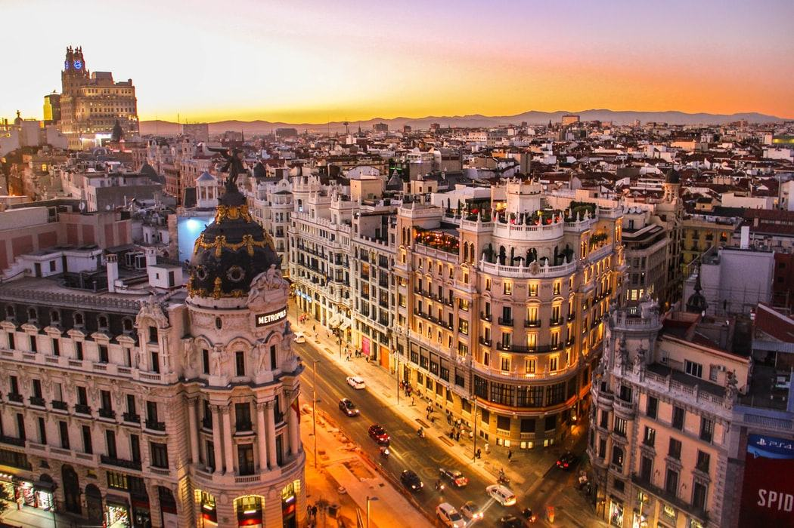

Мадрид
Мадрид – столица Испании, признанная одним из красивейших городов мира. И это неудивительно, ведь здесь гармонично сочетаются современная и средневековая архитектура, а парковые комплексы достойны, чтобы по их аллеям совершали променад монаршие особы. Мадрид расположен в центральной части Пиренейского полуострова. “Сердце Испании” по совместительству является административным центром одноимённых провинции и автономного сообщества.
